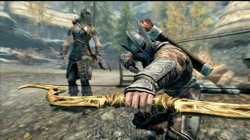
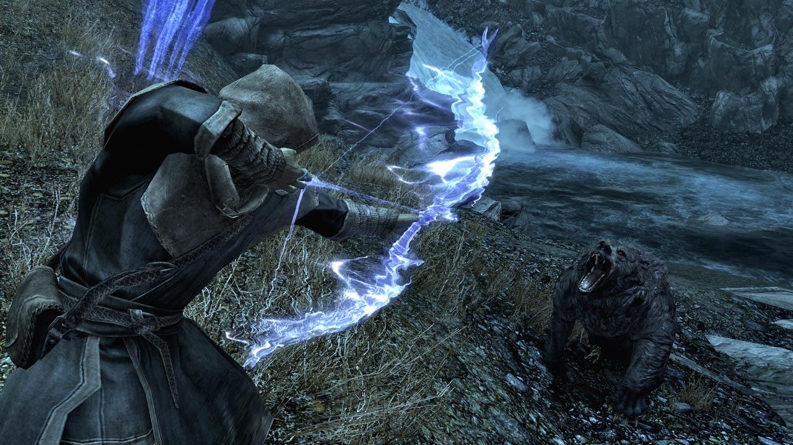

The Elder Scrolls V:Skyrim
Gamplay
The game, The Elder Scrolls V: Skyrim, is an action role-playing game set in a fantasy world. Players can choose to play in either a first-person or third-person perspective. The game offers a vast open world environment called Skyrim, which includes various landscapes such as wilderness expanses, dungeons, caves, cities, towns, fortresses, and villages. To explore the game world efficiently, players have the option to ride horses, pay for rides from city stables, or use a fast-travel system to instantly move their character to a previously visited location.
combat
The effectiveness of the player in combat depends on their utilization of weapons, armor, and enchantments, as well as magic spells. These can be obtained through various means such as purchasing, finding, raiding, stealing, or forging. Dual-wielding is possible by assigning weapons, shields, and magic to each hand, and favorite items can be easily swapped through a quick-access menu. Some weapons and spells require both hands, while shields can be used defensively or offensively. Different types of weapons have specific advantages and roles in close combat. Power attacks consume stamina to temporarily stun or stagger enemies and deal more damage. Spells have multiple functions, both in combat and outside, such as damaging enemies, resurrecting bodies, restoring health or stamina, and providing guidance or illumination. Bows are used for long-range combat and can also be used in melee combat. The player can enter sneak mode to pickpocket or execute powerful sneak attacks on unsuspecting enemies.
